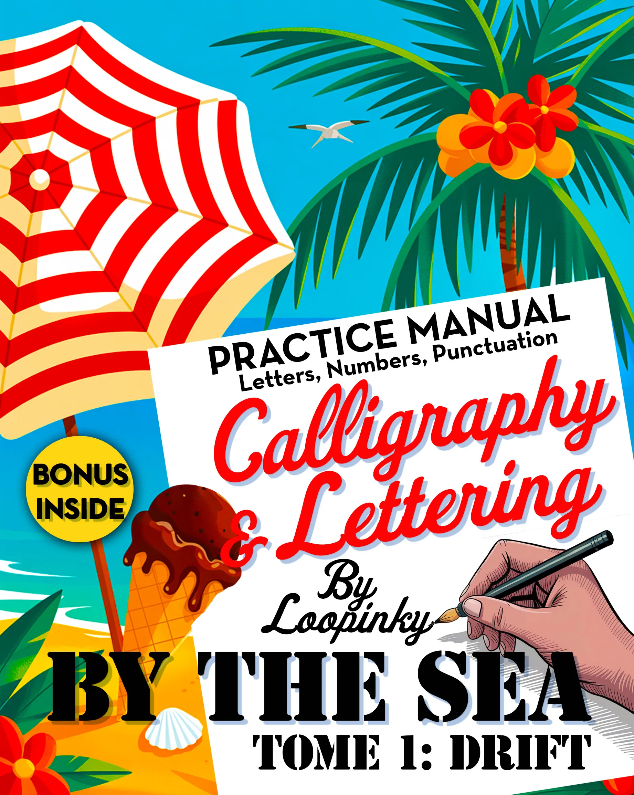
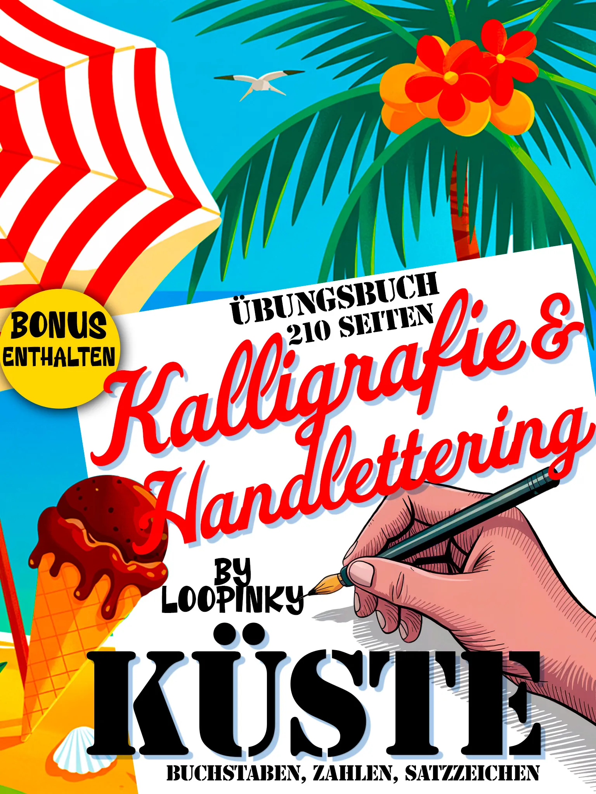

Meilleurs Cahiers de Calligraphie en 2026 : Notre Sélection
Une sélection des meilleurs cahiers de calligraphie et de lettering, de June & Lucy à Loopinky et au-delà.
Lire la suiteConseils, guides et inspiration pour la calligraphie, le hand lettering et le lettering comics
Une sélection des meilleurs cahiers de calligraphie et de lettering, de June & Lucy à Loopinky et au-delà.
Lire la suite
Tout ce que vous devez savoir pour commencer votre parcours en calligraphie : outils, traits de base, conseils de pratique et ressources recommandées.
Lire la suite
Découvrez l'art du lettering comics, explorez différents styles et apprenez à créer une typographie manuscrite expressive.
Lire la suiteVous avez fini votre premier cahier Paper Peony Press, Ricca's Garden ou June & Lucy. Et maintenant ? Découvrez des styles créatifs.
Lire la suite
Pretty Simple Lettering de Whitney Farnsworth face aux styles créatifs Loopinky. Deux approches complémentaires.
Lire la suite
Le guide ultime de calligraphie moderne rencontre le lettering comics et la calligraphie océanique.
Lire la suite
Tour d'horizon complet : June & Lucy, Paper Peony Press, Ricca's Garden, CreateSpace Classics et Loopinky comparés.
Lire la suite
Scripts élégants ou polices comics audacieuses ? Deux directions passionnantes comparées.
Lire la suite
Découvrez comment la calligraphie réduit le stress et favorise la pleine conscience.
Lire la suite